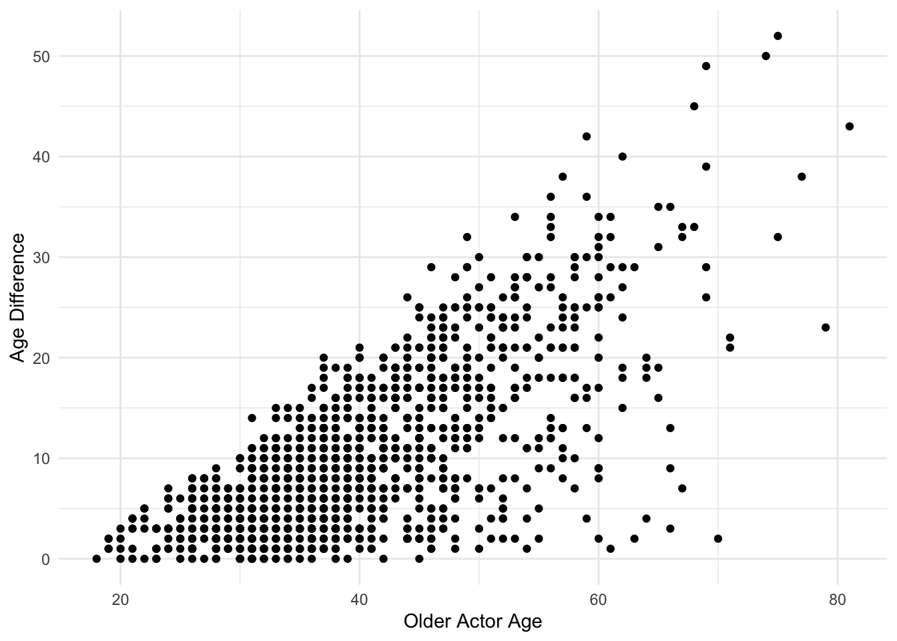
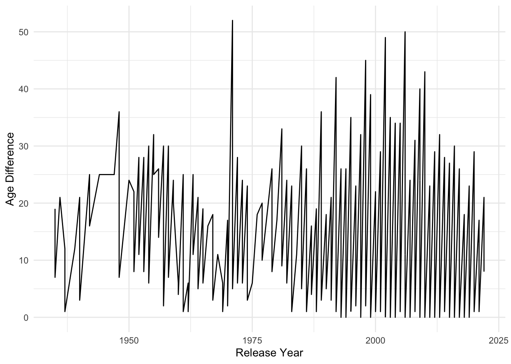
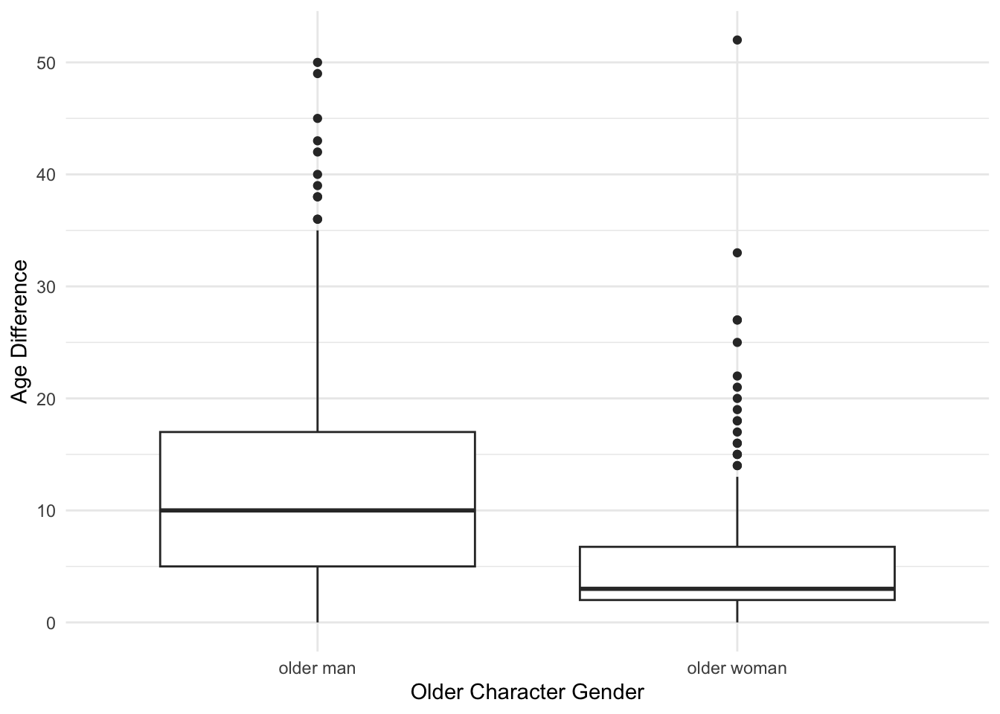
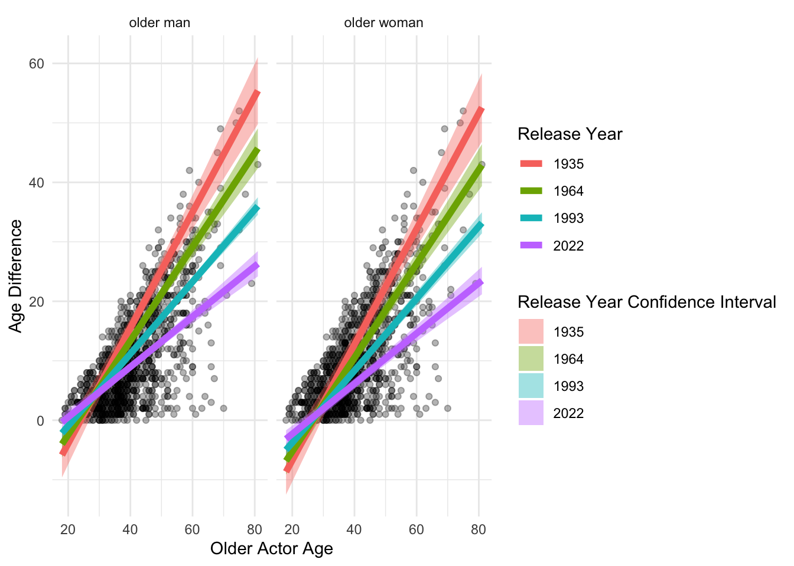

library(tidyverse)
library(readr)
library(here)
library(modelr)
library(broom)
age_gaps <- read_csv(here("data/age_gaps.csv"))Introduction
Hollywood films are infamous for their ridiculous casting age gaps in films, which can be amusing at times. I think it could be interesting to see what kind of factors from the films could predict how big the age gap could be.
On the TidyTuesday GitHub repo I was able to find a data set called “age_gaps” which contains data about different couples from different Hollywood films. The data set includes, variables, such as the film name, the release year, and the name of both the characters and their actors, along with several other variables. The most important is the “age_difference” variable which provides the age difference of the characters in the film couple.
Question of interest
What factors in the data set can best predict the age gap of different film couples and how well can it really be predicted?
Data set links
age_gaps: https://github.com/rfordatascience/tidytuesday/blob/master/data/2023/2023-02-14/age_gaps.csv
Read in the data and packages
Tidying and wrangling the data
For this I did not do a ton of tidying but, I wanted to mutate the character_1_gender so it made more sense. On the website, it is explained that character 1 is the older character, I thought that for the purpose of my model it would make more sense to alter the variable so that it is more clear what the variable is. Thus, I changed the variable of character_1_gender to gendergap, which shows the gender of the older character in the age gap.
tidyagegaps <- age_gaps |> mutate(gendergap = if_else(character_1_gender == "woman", true = "older woman", false = "older man")) |> relocate(gendergap)
tidyagegaps# A tibble: 1,155 × 14
gendergap movie_name release_year director age_difference couple_number
<chr> <chr> <dbl> <chr> <dbl> <dbl>
1 older woman Harold and Ma… 1971 Hal Ash… 52 1
2 older man Venus 2006 Roger M… 50 1
3 older man The Quiet Ame… 2002 Phillip… 49 1
4 older man The Big Lebow… 1998 Joel Co… 45 1
5 older man Beginners 2010 Mike Mi… 43 1
6 older man Poison Ivy 1992 Katt Sh… 42 1
7 older man Whatever Works 2009 Woody A… 40 1
8 older man Entrapment 1999 Jon Ami… 39 1
9 older man Husbands and … 1992 Woody A… 38 1
10 older man Magnolia 1999 Paul Th… 38 1
# ℹ 1,145 more rows
# ℹ 8 more variables: actor_1_name <chr>, actor_2_name <chr>,
# character_1_gender <chr>, character_2_gender <chr>,
# actor_1_birthdate <date>, actor_2_birthdate <date>, actor_1_age <dbl>,
# actor_2_age <dbl>Initial Visualizations
To get a preliminary examination of the data, I made a few minor graphs just to get a feel for the variables I will use in my model.
ggplot(data = tidyagegaps, aes(x = actor_1_age, y = age_difference)) + geom_point() + theme_minimal() + labs(y = "Age Difference", x = "Older Actor Age")
The above scatter plot shows how the age difference increases with the age of the older actor which makes sense as a large age gap is much more common with a much older actor.
ggplot(data = tidyagegaps, aes(x = release_year, y = age_difference)) + geom_line() + theme_minimal() + labs(y = "Age Difference", x = "Release Year")
This line plot above shows how age difference changes over the course of time, using release_year as the time variable. The graph did not come out very well as the age gap jumps around a lot, making the line plot so “zig zaggy”. With this plot it is challenging to identify a clear trend.
ggplot(data = tidyagegaps, aes(x = gendergap, y = age_difference)) + geom_boxplot() + theme_minimal() + labs(y = "Age Difference", x = "Older Character Gender")
Lastly, the above box plot is perhaps the most interesting and most useful of these three variable plots. The plot is showing the difference in the age gap when the man is older vs. when the woman is. Unsurprisingly to me, there is a much bigger range in age differences when the man is older vs. the woman. This is a pattern I had noticed a lot especially, in older movies. It seems to be much more common to cast a much younger woman with an older man, as opposed to if the woman is older, it is more common to cast a man closer or woman closer to her own age.
Modelling
To make my final visualization of the data I created a linear model predicting age_difference based on release_year, actor_1_age (the age of the older actor), the interaction term between release_year and actor_1_age, and lastly, the gendergap variable
modtidy <- lm(age_difference ~ release_year + actor_1_age + actor_1_age:release_year + gendergap,
data = tidyagegaps)
modtidy |> tidy()# A tibble: 5 × 5
term estimate std.error statistic p.value
<chr> <dbl> <dbl> <dbl> <dbl>
1 (Intercept) -366. 93.2 -3.93 9.04e- 5
2 release_year 0.177 0.0466 3.81 1.49e- 4
3 actor_1_age 13.2 2.13 6.20 8.03e-10
4 gendergapolder woman -2.82 0.439 -6.42 1.93e-10
5 release_year:actor_1_age -0.00632 0.00106 -5.94 3.82e- 9The model shows that the y-intercept of the model is negative, with the release_year and actor_1_age coefficients both being positive, but the coefficients of both their interaction term and the gender gap with an older woman are both negative.
Next, I created a grid of the data, to create an augmented dataset which calculated the confidence intervals for the model.
gridmodtidy <- tidyagegaps |>
data_grid(
actor_1_age = seq_range(actor_1_age, n = 6),
gendergap = c("older man", "older woman"),
release_year = seq_range(release_year, n = 4)
)
gridmodtidy# A tibble: 48 × 3
actor_1_age gendergap release_year
<dbl> <chr> <dbl>
1 18 older man 1935
2 18 older man 1964
3 18 older man 1993
4 18 older man 2022
5 18 older woman 1935
6 18 older woman 1964
7 18 older woman 1993
8 18 older woman 2022
9 30.6 older man 1935
10 30.6 older man 1964
# ℹ 38 more rowsaug_tidy <- augment(modtidy, newdata = gridmodtidy,
interval = "confidence")
aug_tidy# A tibble: 48 × 6
actor_1_age gendergap release_year .fitted .lower .upper
<dbl> <chr> <dbl> <dbl> <dbl> <dbl>
1 18 older man 1935 -5.85 -9.62 -2.08
2 18 older man 1964 -4.01 -6.25 -1.77
3 18 older man 1993 -2.17 -3.13 -1.21
4 18 older man 2022 -0.327 -1.74 1.08
5 18 older woman 1935 -8.67 -12.5 -4.84
6 18 older woman 1964 -6.83 -9.15 -4.52
7 18 older woman 1993 -4.99 -6.07 -3.91
8 18 older woman 2022 -3.15 -4.61 -1.69
9 30.6 older man 1935 6.40 4.21 8.59
10 30.6 older man 1964 5.93 4.64 7.23
# ℹ 38 more rowsPlot of the model
Finally, I made a faceted line and scatter plot of the model, using the original data for the scatter plot. But the, augmented data for both the line plot, and the confidence intervals. I faceted the graph by gendergap and treated release_year as a factor, which split it into 4 of its most common values for each line on the graph, since I set n to 4 in the grid, I could not use every year value as it would be too many and overwhelm the graph.
ggplot(data = age_gaps, aes(x = actor_1_age, y = age_difference)) + geom_point(alpha = 0.3) + geom_ribbon(data = aug_tidy, aes(y = .fitted, ymin = .lower, ymax = .upper, fill = as.factor(release_year)), alpha = 0.4) + geom_line(data = aug_tidy, aes(x = actor_1_age, y = .fitted, colour = as.factor(release_year)), linewidth = 2) + facet_wrap(~gendergap) + theme_minimal() + labs(colour = "Release Year", y = "Age Difference", x = "Older Actor Age", fill = "Release Year Confidence Interval")
The resulting plot is a bit odd, due to such a negative y-intercept, the entire plot is shifted below zero, which is the main thing altering the graphs appearance so severely. However, there is a clear interaction point in the lines around 30 years for the older actor age. Additionally, it is quite obvious that the age difference increases with age of the older actor. The lines show that, the older movies had much bigger age gaps than the more recent ones which is unsurprising as big age gaps were much more common in older films. Interestingly, the confidence intervals seem to be bigger for the older movies than the newer ones.The lines in both individual plots are parallel which is to be expected. However, the lines in the graph with the older woman are slightly lower than in the one with the older man, this relates to the trend I observed in the side by side box plots. In summary, the conclusion, I can come to using this graph is that the age difference in between actors in films increases with the age of the older actor, and that difference tends to be greater when the man is older. Lastly, the age difference have gradually gone down over time in more recent films, meaning hopefully these big age gaps are a thing of the past.
Conclusion and wrap-up
In conclusion, I feel that this model was a successful method answering my question of interest, of what best predicts the age gap in between actors in films. I found it an interesting and challenging method to answer the question. That being said, there are a couple of important things to note with the data, that most likely impacted my model and had I more time I would have liked to address. One, is that some films are listed multiple times in the data set as they had multiple couples, for me this did not matter a ton because I was just interested in the age gaps not necessarily the films, but if I had more time it would have been better to address this issue. Secondly and more majorly, there is the fact that some couples are not just a man and a woman but could also be two men or two women, I do not feel that my model did a great job accounting for this and I would have liked to do that better. Lastly, I just simply would have liked to tidy the data a bit more, it was a bit challenging to work with but certainly interesting.
Connection to class ideas
Everything, in this post certainly related to something we learned in class, but I feel that the overarching idea of the modelling was the most obvious connection. I based my model very heavily off of the evals example we had done in section 9 in class, using that coding structure for inspiration, and using that to help guide me in interpreting the data.